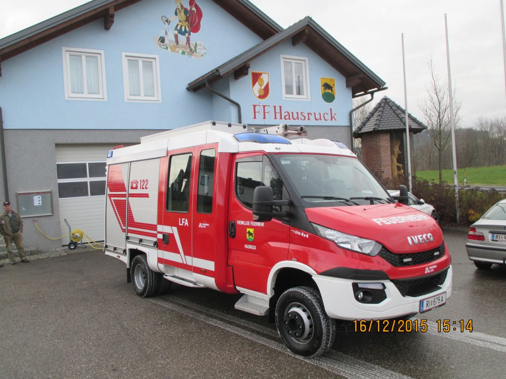
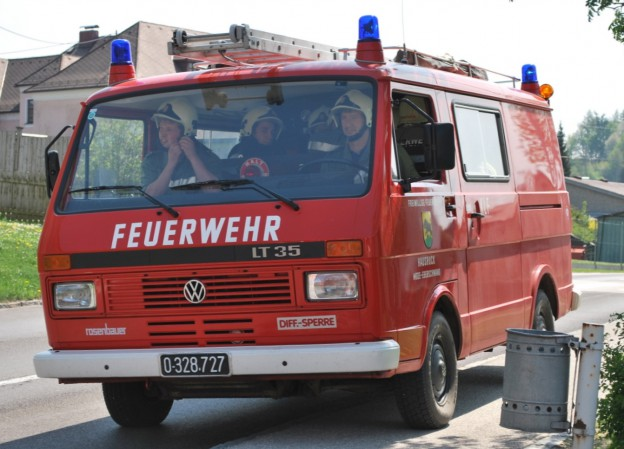

Unsere Fahrzeuge
LFA – Pumpe Hausruck
- Fahrgestell: Iveco Daily
- Aufbau: Lohr
- Baujahr: 2015
- Motor: 170 PS (Diesel)
- Gesamtgewicht: 7 500 kg
- Wassertank: 300 l
- Ausstattung: Tragkraftspritze, A‑Saug-, B-/C‑Druckschläuche, Schiebleiter, Atemschutz, Notstromaggregat, Lichtmast, Greifzug
- Besatzung: 1+8
Seit Dezember 2015 ist bei der FF Hausruck ein modernes Löschfahrzeug mit Allrad (LFA) in Dienst. Es ersetzt das mittlerweile 30 Jahre alte Kleinlöschfahrzeug.
KLF (1986–2015)
- Fahrgestell: Volkswagen LT35
- Aufbau: Rosenbauer
- Baujahr: 1986
- Motor: 66 kW (Benzin)
- Gesamtgewicht: 3 200 kg
- Ausstattung: Tragkraftspritze, A‑Saug-, B-/C‑Druckschläuche, Schiebleiter, Atemschutz
- Besatzung: 1+8
- Funkrufname: Pumpe Hausruck
Unser VW LT35 diente viele Jahre als Kleinlöschfahrzeug. Er war lange Zeit treuer Begleiter bei Einsätzen und Übungen – besonders bewährt in schwierigen Geländebedingungen dank Differentialsperre.